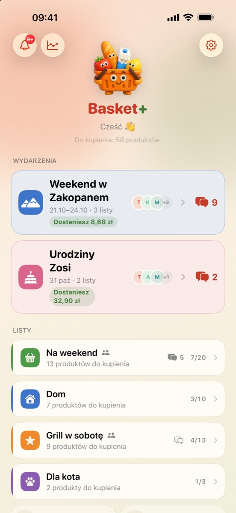
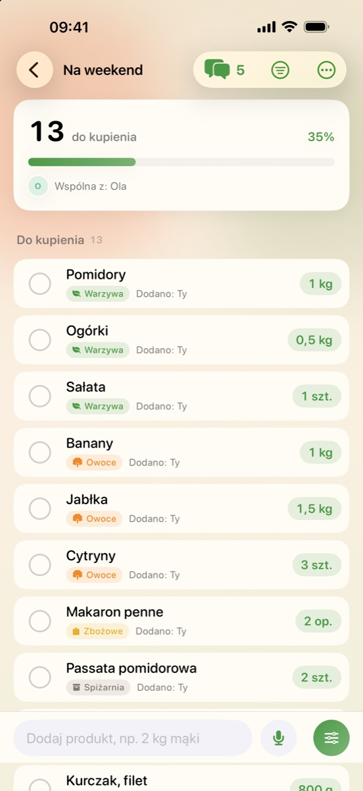
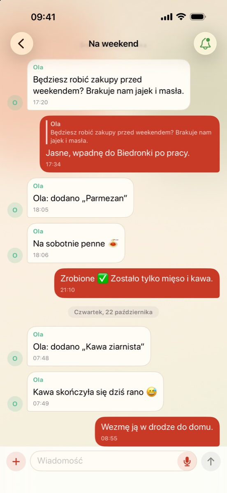
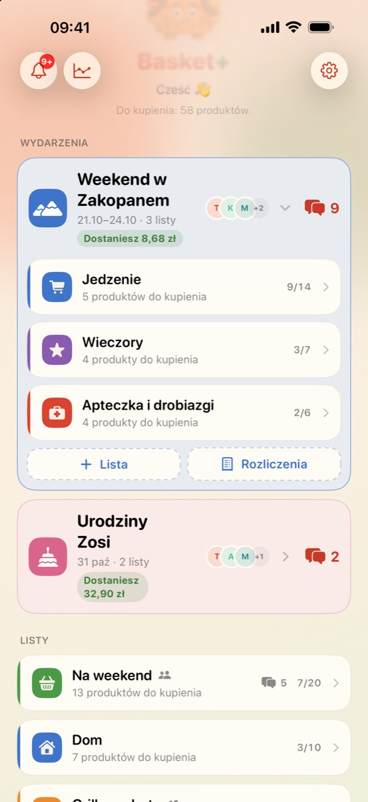
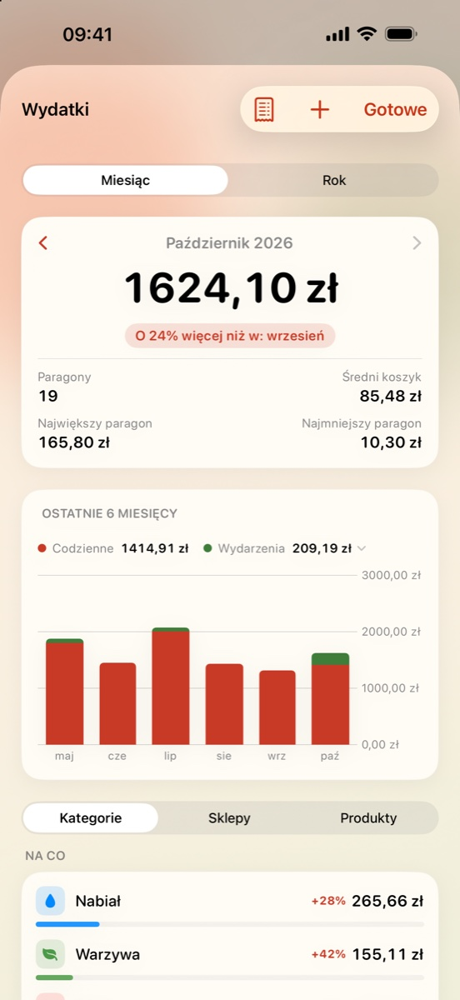
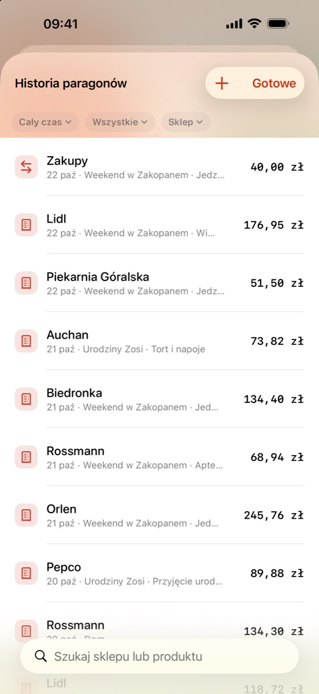

Basket+ Free
- ✓ Listy zakupów
- ✓ Zwykłe udostępnianie
- ✓ Czat listy
Premiera na iOS już wkrótce
Od pierwszego produktu do ostatniego rozliczenia. Basket+ trzyma listy, wspólne ustalenia i wydatki w jednym spokojnym miejscu.
Projektowane dla iPhone’a, iPada i Apple Watch.

Bez zakładania kontaiCloud robi synchronizację
24 językidla domów bez granic
Natywnie dla Appletakże widżety i zegarek
01 · Listy zakupów
Wpisz produkt tak, jak o nim myślisz. Dodaj ilość i jednostkę, wybierz kategorię, odhacz w sklepie i wróć do historii, gdy znów będzie potrzebny.

02 · Wspólne zakupy
Udostępnij listę przez iCloud, zobacz zmiany innych osób i dopnij szczegóły w rozmowie obok zakupów. Podstawowe udostępnianie oraz czat są dostępne w wersji Free.

03 · Wydarzenia · Plus
Wyjazd, przyjęcie czy rodzinne święta. Połącz listy w jedno wydarzenie, uporządkuj przygotowania i zachowaj wspólny kontekst.
Basket+ Plus
04 · Paragony i raporty · Plus
Zachowuj paragony, analizuj kategorie i sklepy, obserwuj trendy oraz rozliczaj wspólne zakupy — bez arkusza obok.


Basket+ Free i Plus
Podstawowe wspólne zakupy pozostają dostępne bez subskrypcji. Plus dodaje organizację wydarzeń i pełny obraz wydatków.
Subskrypcja dotyczy konta, które ją wykupiło. Aktualna cena będzie widoczna w aplikacji i App Store.
FAQ
Nie. Basket+ nie wymaga zakładania konta ani logowania. Synchronizacja i udostępnianie korzystają z iCloud, jeśli jest włączony na urządzeniu.
Nie. Podstawowe udostępnianie list oraz rozmowa na wspólnej liście są częścią Basket+ Free.
Plus odblokowuje wydarzenia, paragony, raporty, rozliczenia wydatków i usuwa reklamy dla subskrybenta.
Przez iCloud i CloudKit. Dane pozostają na Twoich urządzeniach i w Twoim koncie iCloud; nie prowadzimy własnej bazy kont użytkowników.
Tak. Subskrypcją zarządzasz w ustawieniach konta Apple. Po anulowaniu dostęp Plus pozostaje aktywny do końca opłaconego okresu.
Napisz na hello@basketplus.app lub skorzystaj z naszej strony wsparcia.
Premiera wkrótce